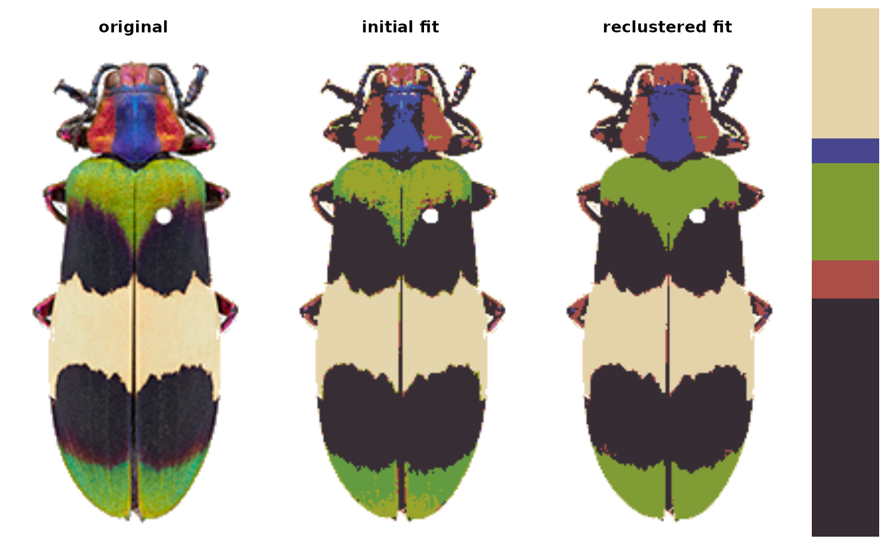
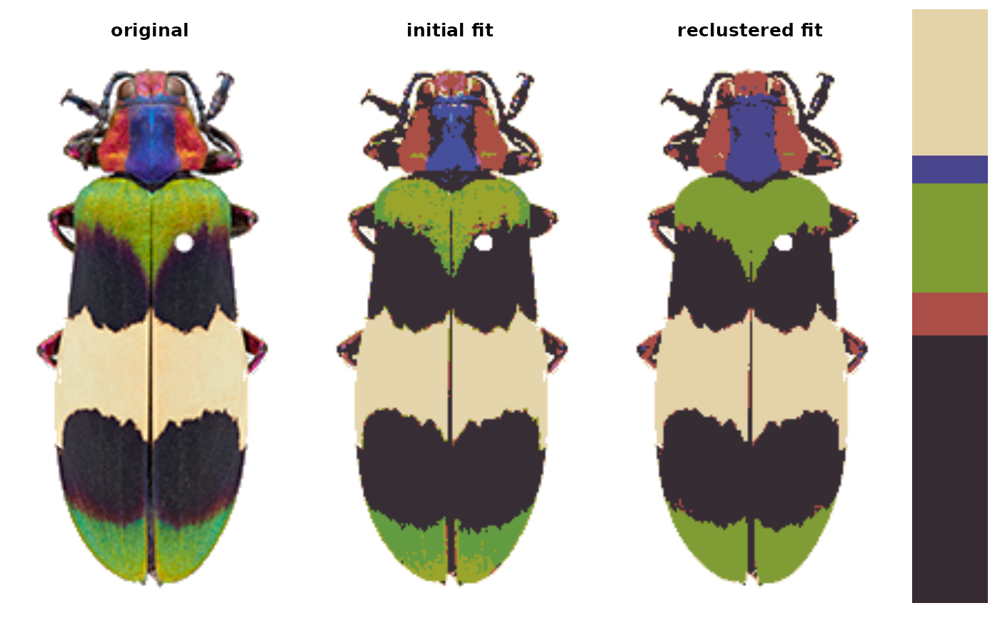

Converts a recolorize color map to a set of polygons, which
can be plotted at any scale without losing quality (as opposed to
the pixel-based bitmap format). Requires the raster, rgeos, and
sp packages to be installed. Useful for creating nice visualizations;
slow on large images. It's recommended to fit a recolorize object
by reducing the original image first, rather than the resize argument
here, which reduces the color map itself (to mixed results).
Usage
recolorizeVector(
recolorize_obj,
size_filter = 0.1,
smoothness = 1,
base_color = "default",
plotting = FALSE,
resize = 1,
...
)Arguments
- recolorize_obj
An object of class
recolorize, as generated by recolorize, recolorize2, imposeColors, or wernerColor.- size_filter
The size (as a proportion of the shortest dimension of the image) of the color patch elements to absorb before vectorizing. Small details (e.g. stray pixels) tend to look very strange after vectorizing, so removing these beforehand can improve results.
- smoothness
Passed to smoothr::smooth using the
"ksmooth"method for smoothing the jagged lines that result from converting pixel coordinates to polygon vertices. Higher values = more smoothing.- base_color
The color to use to fill in the gaps that can result from smoothing. If
base_color = "default", defaults to the darkest color in the palette. Otherwise, should be the numeric index of one of the colors inrecolorize_obj$centersto use.- plotting
Logical. Plot results while computing?
- resize
Proportion by which to resize the color map before turning into a polygon, e.g.
resize = 0.5will reduce color map size by 50%. Speeds up the function, but you will almost always get better results by resizing the initial image when fitting therecolorizeobject.- ...
Plotting parameters, passed on to graphics::plot.
Value
A vector_recolorize object, which is a list with the following
elements:
base_layer: The base polygon, essentially the image silhouette.layers: A list of sp::SpatialPolygonsDataFrame polygons, one per color patch.layer_colors: The colors (as hex codes) for each polygon.base_color: The color (as hex code) for the base polygon.asp: The original image aspect ratio, important for plotting.
Details
Although vector objects will typically be smaller than recolorize objects,
because they only need to specify the XY coordinates of the perimeters of
each polygon, they can still be fairly large (and take a long time to
calculate). Users can try a few things to speed this up: using lower
smoothness values; setting plotting = FALSE; resizing the image
(preferably when fitting the initial recolorize object); and
reducing the complexity of the color patches using absorbLayer or
editLayer (e.g. by absorbing all components < 10 pixels in size). Still,
expect this function to take several minutes on even moderately sized
images–it takes about 7-10 seconds for the ~200x100 pixel images in the
examples! Once the function finishes running, however, plotting is
quite fast, and the objects themselves are smaller than the recolorize
objects.
Examples
# \donttest{
img <- system.file("extdata/corbetti.png", package = "recolorize")
rc <- recolorize2(img, cutoff = 45)
#>
#> Using 2^3 = 8 total bins
 
# to reset graphical parameters:
current_par <- graphics::par(no.readonly = TRUE)
# takes ~10 seconds
as_vector <- recolorizeVector(rc, smoothness = 5,
size_filter = 0.05)
# to save as an SVG with a transparent background and
# no margins (e.g. for an illustration figure):
grDevices::svg("recolorize_vector.svg",
height = 4, width = 2, bg = "transparent")
par(mar = rep(0, 4))
plot(as_vector)
dev.off()
#> pdf
#> 2
# and to avoid spamming your working directory, run this line to remove
# the file we just wrote:
file.remove("recolorize_vector.svg")
#> [1] TRUE
graphics::par(current_par)
# }

# to reset graphical parameters:
current_par <- graphics::par(no.readonly = TRUE)
# takes ~10 seconds
as_vector <- recolorizeVector(rc, smoothness = 5,
size_filter = 0.05)
# to save as an SVG with a transparent background and
# no margins (e.g. for an illustration figure):
grDevices::svg("recolorize_vector.svg",
height = 4, width = 2, bg = "transparent")
par(mar = rep(0, 4))
plot(as_vector)
dev.off()
#> pdf
#> 2
# and to avoid spamming your working directory, run this line to remove
# the file we just wrote:
file.remove("recolorize_vector.svg")
#> [1] TRUE
graphics::par(current_par)
# }